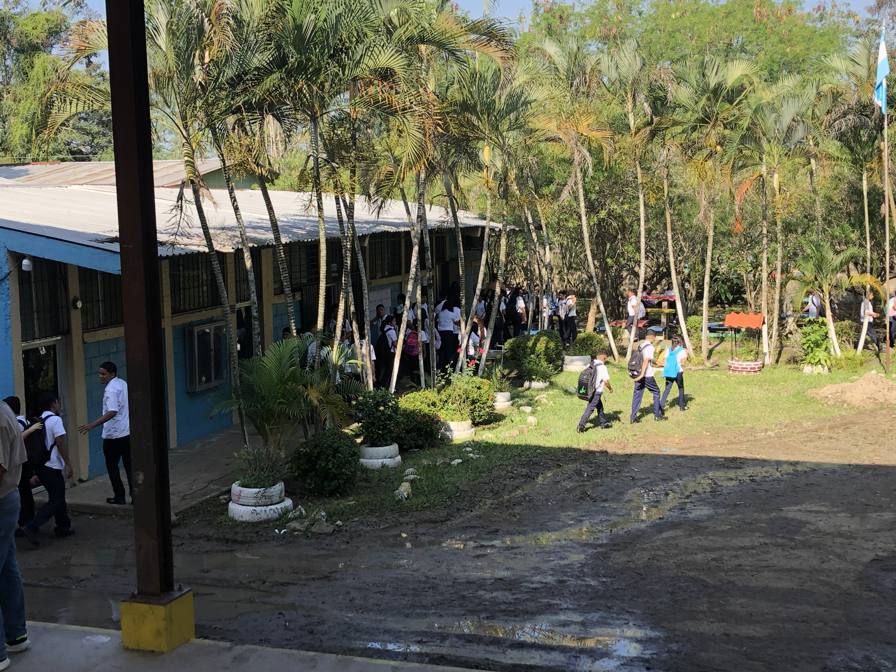

Atención de matrícula
Horario enero 2026
8:00 AM - 12:00 PM
Lunes a viernes durante el mes de enero.
Cómo llegar
El instituto se encuentra al servicio de la comunidad de Agua Blanca Sur y zonas cercanas del municipio de El Progreso.
Dirección
Agua Blanca Sur, El Progreso, Yoro, Honduras.
Abrir en Google Maps
Atención de matrícula
8:00 AM - 12:00 PM
Lunes a viernes durante el mes de enero.
Secretaría
Durante febrero de 2026, los estudiantes que no pudieron matricularse en el período ordinario deben acercarse a Secretaría.
Antes de visitar
Para procesos de matrícula, es recomendable llevar todos los documentos en una carpeta y revisar que la información esté completa antes de presentarse.
Agua Blanca Sur, municipio de El Progreso, departamento de Yoro, Honduras.
Durante enero de 2026, la atención de matrícula indicada es de lunes a viernes de 8:00 AM a 12:00 PM.
Para matrícula extraordinaria en febrero de 2026, los estudiantes deben acercarse a Secretaría.